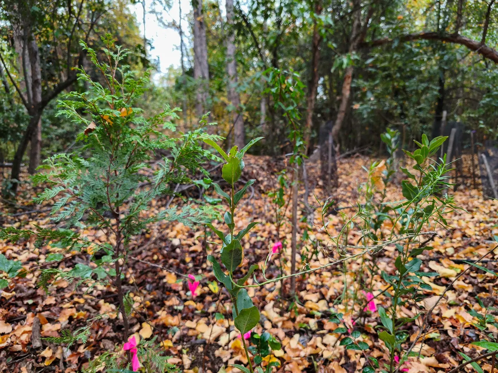

Base técnica y científica
Decisiones respaldadas por conocimiento aplicado, monitoreo, investigación y experiencia territorial.
Grupo ECORES
Grupo ECORES reúne capacidades técnicas, productivas, científicas y operativas para acompañar proyectos ambientales desde la planificación hasta su ejecución en terreno.
Quiénes somos
Grupo ECORES es un ecosistema de empresas especializadas en restauración ecológica, producción vegetal nativa, consultoría ambiental, innovación e investigación aplicada.
Su trabajo se orienta a desarrollar soluciones ambientales técnicamente sólidas, viables de implementar y conectadas con las necesidades reales del territorio.
Continuidad técnica
Muchos proyectos ambientales enfrentan dificultades al momento de pasar del diseño a la ejecución: disponibilidad de plantas adecuadas, continuidad técnica, seguimiento, coordinación de equipos o capacidad operativa en terreno.
Grupo ECORES articula estas etapas dentro de una misma red de capacidades, permitiendo abordar los proyectos con mayor continuidad, respaldo técnico y trazabilidad.

TRABAJO EN TERRENO
Desde el diagnóstico inicial hasta el seguimiento en terreno, el trabajo de Grupo ECORES busca mantener coherencia entre los objetivos del proyecto, las condiciones del sitio y las acciones implementadas.
Esta continuidad permite conectar planificación, producción vegetal, ejecución y monitoreo dentro de un mismo marco de trabajo.
Nuestro enfoque
Decisiones respaldadas por conocimiento aplicado, monitoreo, investigación y experiencia territorial.
Plantas nativas producidas con atención al origen del material vegetal, la procedencia de semillas y la pertinencia ecológica de cada proyecto.
Implementación en terreno, seguimiento técnico y adaptación a las condiciones reales de cada sitio.
Integración de empresas, equipos, predios, financiamiento y requerimientos ambientales para responder de manera coordinada.
Cómo trabajamos
Cada proyecto puede requerir una combinación distinta de capacidades. El valor de Grupo ECORES está en articularlas según las necesidades del caso, manteniendo continuidad técnica desde el diseño hasta la ejecución.
Ecosistema Grupo ECORES
ECORES, Consultora Nothofagus, Vivero ECORES, Huge Forest y CiiRES cumplen roles distintos dentro del ecosistema del grupo. Juntas permiten conectar respaldo técnico, producción vegetal trazable, innovación, investigación aplicada y ejecución en terreno.
Conoce nuestras empresas →Cierre
Si tu organización requiere desarrollar, planificar o implementar acciones de restauración, reforestación o compensación ambiental, Grupo ECORES puede orientar el proceso hacia la solución más adecuada.